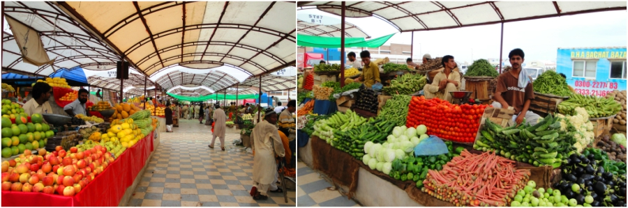

At its simplest, Pakistani food today consists of staple ingredients which are cheap and abundant. Wheat and other flour products is the mainstay of the diet, one familiar form being CHAPATI: unleavened bread made with dough prepared from whole wheat flour.
Vegetables, usually seasonal, especially lentils are commonly used, but families with larger incomes tend to eat more meat, eggs and fruits and cook more often with GHEE, which is clarified butter, instead of vegetable oil.
From ancient times, the imaginative – and sometimes heavy – use of spices, herbs, seeds, flavorings and seasonings have helped cooks transform rather ordinary staple Pakistani foods into exotic cuisine. Their use of a wide range of pickles, chutneys, preservatives and sauces, together with a wide variety of curries and special treatment for meats, sea, food, vegetables and lentils, gives Pakistani food much of its distinctive character. Lamb, beef, chicken and fish are basic foods, although their consumption by persons of lower incomes is modest and often ceremonial.

Stay healthy
Visitors are strongly advised to refrain from drinking tap water; take every precaution to drink only boiled, filtered or bottled water. Take precautions against malaria spread by mosquitoes. Avoid getting bitten and if you plan to stay in a place where malaria is common, take prophylactic medication along. The risk of getting Malaria decreases with higher altitudes.
Summers are very hot, so make sure that you stay hydrated. Temperatures range between 40 and 50°C in June and July, but as soon as the monsoon rains arrive in August and September, the temperature cools to around 30°C but with high levels of humidity. Do not eat food that has been lying out for some time, as high temperatures speed up deterioration.
Liquor
Liquor is completely banned for Muslims in Pakistan. Foreigners and non-Muslims can have it on permits or in hotels wherever available. It cannot be imported in baggage. Import of liquor is banned with the exception of mountaineering, trekking and scientific expeditions.